Introduction
The text in ProcessMaker can be changed from the default language (English) to the language of your choice by creating a translation file. Follow these instructions to translate ProcessMaker into a new language or improve an existing translation of ProcessMaker. To know more about translations, see Languages.
Creating a .po Translation File
ProcessMaker stores translations in gettext portable object files, which have a .po extension. It is recommended to translate the .po file using Poedit. The .po file must be encoded in the UTF-8 character set.
After translating ProcessMaker, it may be necessary to edit the .po file's header to correctly import the translation.
Downloading and Installing Poedit
Refer to one of these sections to download and install Poedit:
Linux
To download and install Poedit in Linux, execute the following command in the terminal:
sudo apt-get install poedit
Windows
To download and install Poedit on Windows, follow these steps:
1. Go to the Poedit web page to download it.
2. In the new page, click Free Download, and then click on the installer to start the installation.

3. Click Run to run the file in a safe way.
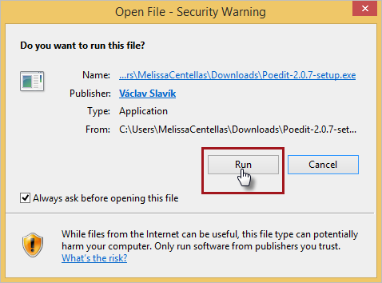
4. Select I Accept the agreement, and then click Next.
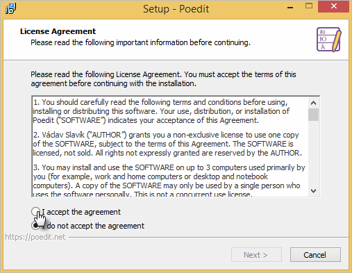
5. Browse the destination folder if it is required, and then click Next.
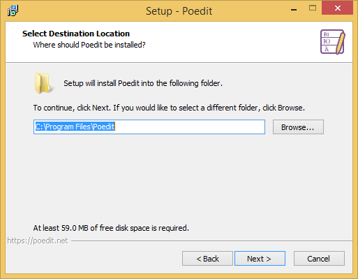
6. Click Install if all is ready. Otherwise click Back.
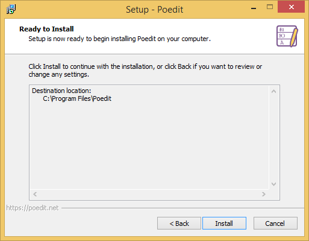
Wait until the installation finishes.

7. Click Finish to finish the installation.
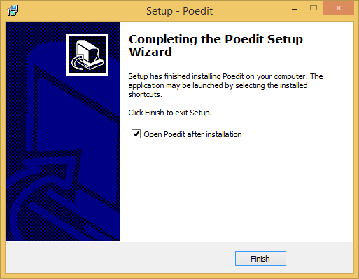
Setting the Header in Poedit
Follow the next steps to edit the header information for the po file in Poedit.
1. Download the version of the English translation file for the ProcessMaker installation. Use the English file as a reference to create or update another translation since the English file contains all the correct and updated labels. Download the po file in these ways:
- After ProcessMaker is installed, go to Admin > Settings > Language, choose the English file, and then click Export.

- From the ProcessMaker SourceForge page.
2. Open Poedit.

3. Open the po file with Poedit by clicking Open and then selecting the processmaker.en.po file.
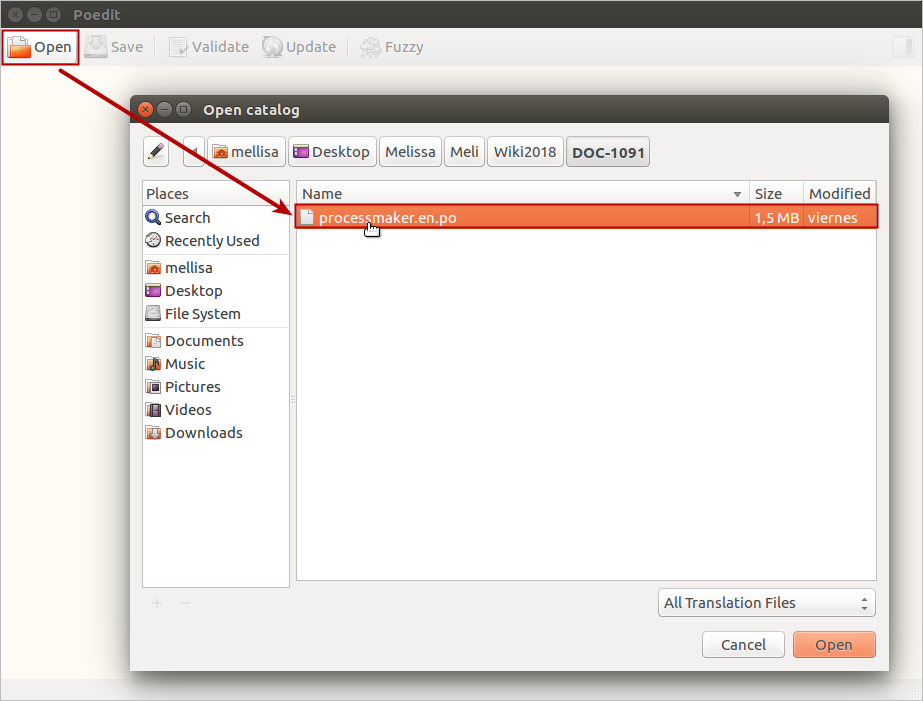
4. Go to Catalog > Properties or press Alt+Return (Alt+Enter in Windows).
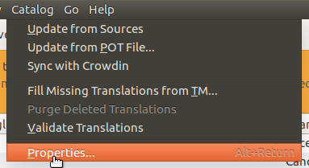
5. In the Catalog properties window, make the following changes:
- In the Language field, select from English to your language.
- In the Charset field, select the UTF-8 character.
- In the Team field enter your name.
- In the Team's email address enter an address where people can contact you with revisions and updates about the translation.
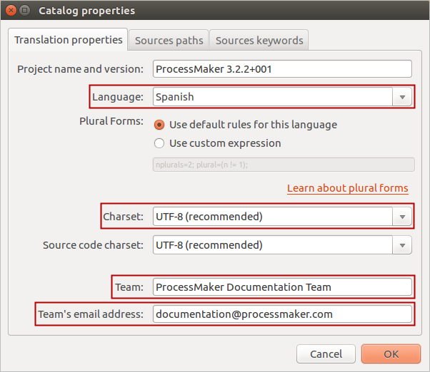
6. Click OK to save the changes.
Translating with Poedit
After opening and setting the header of the po file, Poedit displays a list of phrases to translate in the Source text column. Follow these steps to translate phrases.
1. Select a phrase to translate.

2. Below the phrases list, the Source text box displays the original English phrase, and the Translation box displays the translation. In the translation box, enter the phrase from English to your language.
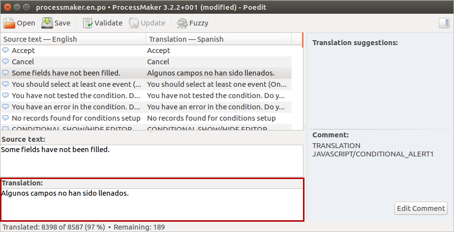
Press the Down key to switch among the phrases list and the translation box for each phrase.
Review the translator comments window to see if there are any translator comments left by a previous translator.
3. Phrases highlighted in yellow are marked as "fuzzy," which means that the original phrase in the software has changed, so the phrase needs to be retranslated.
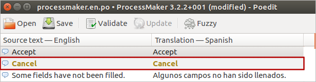
If you are unsure how to translate a phrase, it is better to leave the translation box blank rather than use an incorrect translation. Another option is to do a preliminary translation of a phrase, but indicate that the phrase needs to be reviewed in the future by clicking the Fuzzy icon in the toolbar. This will indicate to the next translator that the translation needs to be reviewed. A comment can also be left for the next translator by going to Edit > Edit Comment.
4. When done go to File > Save As to save the file as processmaker.<LANG>.po, where <LANG> is the 2 letter 639-1 ISO language code.
Editing a Po File with a Plain Text Editor
Follow these steps to change the .po header with a plain text editor:
1. Use the English file as a reference to create or update another translation since the English file contains all the correct and updated labels. You can download the .po file in these ways:
-
After ProcessMaker is installed, go to Admin > Settings > Language, choose the English file, and then click Export.
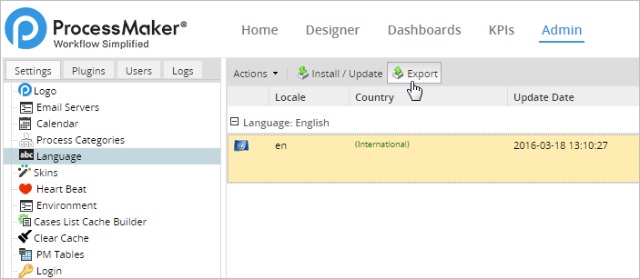
- From the ProcessMaker SourceForge page.
2. Create a file in any plain text editor such as Notepad++ or UltraEdit for Windows and vim or gedit for Linux, to create your translations. Add a header, which can be copied from the original one, and change it to the language of your file. For example, if you are creating a Spanish language translation file, the header is:
msgstr ""
"Project-Id-Version: ProcessMaker 3.2.2+001\n"
"POT-Creation-Date: \n"
"PO-Revision-Date: 2018-06-05 13:55-0400\n"
"Last-Translator: \n"
"Language-Team: ProcessMaker Documentation Team <documentation@processmaker.com>\n"
"MIME-Version: 1.0\n"
"Content-Type: text/plain; charset=UTF-8\n"
"Content-Transfer_Encoding: 8bit\n"
"X-Poedit-SourceCharset: UTF-8\n"
"Content-Transfer-Encoding: 8bit\n"
"Plural-Forms: nplurals=2; plural=(n != 1);\n"
"Language: es\n"
"X-Generator: Poedit 1.8.7.1\n"
3. Copy the content of the original file and translate the msgstr strings.
Then translate the msgstr strings:
# JAVASCRIPT/CANCEL
#: JAVASCRIPT/CANCEL
#, fuzzy
msgid "Cancel"
msgstr "Cancelar"
# TRANSLATION
# JAVASCRIPT/CONDITIONAL_ALERT1
#: JAVASCRIPT/CONDITIONAL_ALERT1
msgid "Some fields have not been filled."
msgstr "Algunos campos no han sido llenados."
Do NOT change the string for the msgid because this is the ID of the label. Make sure that each msgstr is enclosed in double quotes. To use a double quotation mark within a string, precede it with a backslash \".
New and Removed IDs by ProcessMaker Version
This section displays the IDs that have been added and removed to add and update in your translations. Click the ProcessMaker version to see in the left side a table of the added and removed IDs.
|